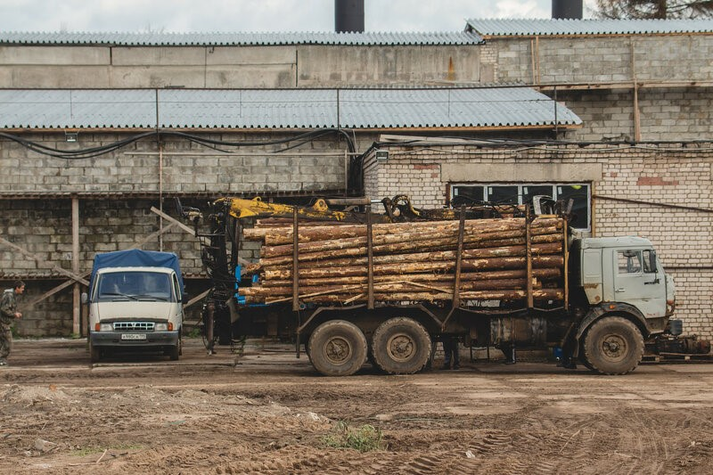
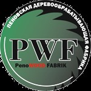
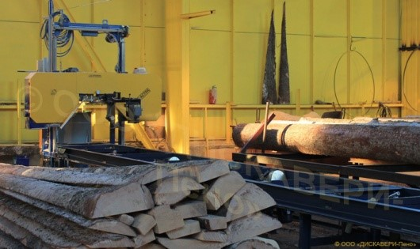
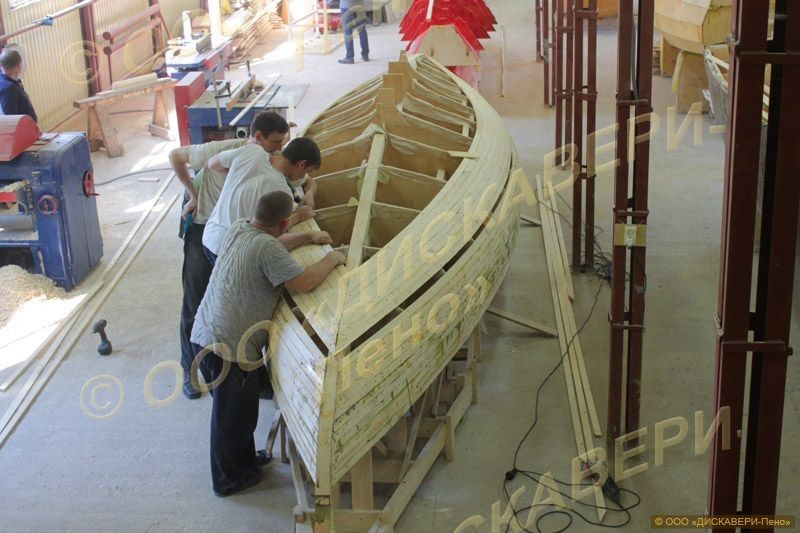

Пено
Экономика
Деревообрабатывающий комбинат
  Основан в 1911 году предпринимателем Саввой Морозовым.
Пеновская деревообрабатывающая фабрика производит высококачественный пиломатериал широкого ассортимента и является одним из крупнейших лесоперерабатывающих предприятий Тверской области.
Пеновская деревообрабатывающая фабрика объединяет две компании: ООО "Инвест-Лизинг-Тверь" (снабжение предприятия сырьём) и ООО "Дискавери-Пено" (обеспечивает последующую обработку древесины). Сама фабрика является крупнейшим лесопромышленным производством в Пеновском районе. На ней работают 230 человек. Компания производит высококачественный пиломатериал широкого ассортимента, дома из профилированного бруса, яхты, лодки. Запущена автоматическая линия сортировки круглого леса, открыт завод по производству древесных топливных гранул - пеллет. Мощность линии составляет 3 тонны продукции в час или 20 тысяч тонн в год. Фабрика имеет собственные лесосеки.
